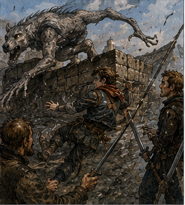
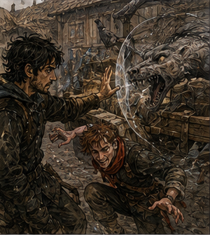

The first creature came over the wall sideways.

Not climbed.
Not jumped.
Sideways.
One moment the top of the orchard wall was empty. The next, four gray limbs hooked over the stones and something long pulled itself across without changing pace.
The driver shouted.
The horses saw it.
Everything happened at once.
Our wagon lurched left.
Alden grabbed the rail.
I grabbed Alden.
The rider from the timber yard drew his sword.
The creature dropped into the road.
Dog was wrong.
Wolf was wrong.
It had the head for either if you looked quickly and wanted the world to make sense. Narrow muzzle. Dark mouth. Ears pressed flat.
Then the body ruined it.
Too long through the ribs.
Forelegs slightly shorter than the rear.
Joints folding close to the body, then opening farther than they should.
Gray hide with strips of coarse black hair along the spine.
It landed without the impact its size deserved.
Smooth.
That was what the potter had meant.
The horses screamed.
“Hold them!” the driver yelled.
The wagon turned harder.
The left wheels struck the ditch.
Alden went over the side.
I caught cloth.
His red scarf.
Wrong thing.
It tore free.
Alden hit the road shoulder and rolled.
The creature turned.
Too fast.
Exactly too fast.
Not speed.
No preparation.
Its front half pointed at the horses.
Then at Alden.
No visible shift between.
My hand was already up.
Mana.
Too much thought.
Small.
Brief.
What needs to move?
Not creature.
Alden.
No.
Creature’s mouth.
It lunged.
I cast.
A Barrier the size of my palm appeared beside its muzzle.

Not in front.
Beside.
The creature struck it at an angle.
The Barrier shattered.
Pain snapped behind my eyes.
The head moved three inches.
Enough.
Its teeth closed on Alden’s coat instead of his throat.
Alden shouted and drove his boot into its chest.
The creature dragged him.
“Greg!”
I jumped from the wagon.
Bad decision. Necessary decision. Maybe.
The rider reached us first.
His sword came down across the creature’s back.
Steel cut hide.
Black blood sprayed.
Blood.
Useful later.
Not now.
The creature released Alden and folded.
That was the only word.
Its body compressed under itself, legs disappearing, spine bending, then it exploded sideways into the rider.
He flew.
Sword gone.
Alden came up on one knee.
I drew mine.
I was a Bronze warrior. I had been an S-class support adventurer. Neither fact made my current sword arm faster.
The creature came at me.
I knew where to cut.
I could not get there.
I stepped back.
Its first claw missed my stomach.
Second caught my belt.
Leather snapped.
I hit it with the sword guard.
Useless.
Alden slammed into its side.
Both went down.
“Stop winning the first part!” I shouted.
“What?”
“Get off it!”
Alden rolled away.
The creature’s rear leg kicked through the space where his ribs had been.
Good.
He learned.
The rider recovered his sword.
“Back!”
We backed.
The creature did not pursue.
It crouched in the road.
Black blood ran down one side.
Its breathing was wrong too.
Fast.
Then still.
Fast.
Then still.
The wagon horses were half in the ditch.
Driver fighting reins.
Relief cargo shifting.
Rusk was not with us.
Of course he was not.
Boat delivered.
Employment ended.
Problem ours.
No.
Problem local.
We had a rider.
Driver.
Alden.
Me.
Creature.
“Name?” I shouted at the rider.
“What?”
“Your name.”
“Cal.”
“Cal, can you fight it?”
“Yes.”
“How sure?”
He stared at me.
“Now?”
“Yes, now.”
“Six.”
Excellent.
“Alden?”
“Seven.”
“Greg?”
Alden asked it back.
“Three.”
He looked at me.
“That low?”
“Current body.”
The creature moved.
Conversation over.
Cal went left.
Alden went right.
I stayed behind them.
Support. There. That felt different. Not safer. Correct.
“Don’t chase if it breaks,” I said.
Alden said, “I know.”
The creature sprang at Cal.
He set his sword.
Wrong.
“Move!”
Cal moved.
Late.
Claws raked his sleeve.
Alden cut the creature’s rear leg.
Shallow.
It spun.
Again no transition.
Alden had expected it this time.
He ducked.
Good.
I saw the pattern.
Not enough. Creature attacks. Compresses. Changes direction without normal footwork. How? Magic? Anatomy? Both? Check later.
It went for Alden.
He retreated.
Three steps.
Fourth would put him against wagon wheel.
“Left!”
He went left without asking why.
The creature followed.
Cal struck from behind.
Blade bit deeper.
Black blood.
The creature screamed.
High.
Almost human.
The horses lost what remained of their minds.
One reared.
Harness snapped.
The wagon shifted.
“Driver!” I shouted.
“I know!”
He did.
Of course he did.
Stop narrating other professions.
The free horse kicked.
The creature flinched.
Interesting.
Sound?
Movement?
Horse?
No time.
It bolted toward the orchard wall.
Alden took one step after it.
Stopped.
Good.
Cal did not.
He chased.
“Cal!”
He reached the wall as the creature climbed.
It did not climb like an animal.
Front claws struck stone.
Rear legs folded.
Then it flowed upward.
Cal stabbed.
Missed.
The creature vanished over.
Silence.
Not silence.
Horses.
Driver.
My breathing.
Alden’s breathing.
Cal swearing.
“Everyone alive?” I asked.
“Yes,” Alden said.
“Yes,” Cal said.
Driver shouted, “Horse!”
Right. One horse was loose. Alive. Running east.
The other three were tangled but standing.
The wagon leaned into the ditch.
Relief cargo still aboard.
I looked at Alden.
Blood on coat.
“Yours?”
He checked.
“Don’t know.”
“Check.”
“I’m fine.”
“Check.”
He did.
Torn coat.
Scratches along shoulder.
No bite.
Cal had three claw lines on his forearm.
Bleeding.
Not deep.
“Wrap that.”
“I know.”
Good.
The orchard wall stood ten feet away.
Creature beyond.
Maybe leaving.
Maybe circling.
Maybe three creatures.
Three seen.
We had encountered one.
I remembered the rider’s report.
Three seen.
Not three total.
The road behind us was open.
The road ahead bent between orchard walls.
Darrowmere smoke beyond.
The loose horse had disappeared around that bend.
Alden picked up his red scarf from the dirt.
Torn.
He looked at it.
Something inside me went cold.
Future.
Red scarf dark.
Bell cracking.
No.
Not this.
I knew that.
I knew nothing.
“Alden.”
He tied the torn scarf around his wrist.
“What?”
“Nothing.”
He stared at me.
“Bad face?”
“Later.”
A sound came from the orchard.
Not the scream.
Branches.
Cal raised his sword.
Alden raised his.
I did too.
Wrong.
My sword was not where I belonged.
I lowered it slightly.
“Back to wagon.”
Cal said, “We can kill it.”
“Maybe.”
“It’s hurt.”
“Yes.”
“We hurt it.”
“Yes.”
“So finish.”
Alden looked at him.
Then at me.
There it was. First advantage. Spend it.
I said, “No.”
Cal’s jaw tightened.
“It’ll hit someone else.”
“Possibly.”
“Then we kill it.”
“Or it pulls us over the wall and there are two more.”
Branches moved.
Closer.
Cal backed toward the wagon.
Good.
Not agreement.
Compliance.
Enough.
The driver had a knife out and was cutting a twisted trace.
“What do you need?” I asked.
“Five minutes.”
“You have one.”
“Then I need a miracle.”
“No.”
He looked at me.
“What?”
“Ask for something smaller.”
He almost hit me.
Fair.
“Hold those three horses. Keep them from pulling sideways. Get the cargo off the left rear.”
That I could do.
“Alden.”
“Cargo.”
We moved.
Canvas first.
Medical chest.
Blankets.
Cal kept watch.
The orchard branches stopped moving.
Worse.
We shifted weight.
The wagon rose slightly.
Driver freed the trace.
“Can it roll?”
“If the wheel’s sound.”
“Is it?”
“Find out.”
He climbed down into the ditch.
I hated that.
“Cal, watch wall. Alden, road east.”
“What about west?”
“I have west.”
Alden glanced at my sword.
“You said three.”
“Three is not zero.”
He nodded.
That felt worse than an argument.
The driver kicked the wheel.
Checked hub.
“Good.”
“How long?”
“Two minutes.”
We did not have two minutes.
I knew because the second creature came from behind us.
Alden saw my face change.
He turned.
“Greg?”
“West!”
The creature ran low along the road.
Different.
Smaller.
Same gray hide.
Black spine.
Bloodless.
Fresh.
Cal pivoted from the wall.
Too far.
Alden was closest.
He moved to intercept.
“No!”
He stopped.
The creature did not want him.
It wanted the horses.
Of course.
Livestock.
Sheep.
Mule.
Horse.
Pattern.
“Let it choose!” I shouted.
Nobody understood.
The creature accelerated.
The driver was under the wagon.
“Out!”
He rolled.
The creature launched at the nearest horse.
I saw the line.
Harness.
Horse neck.
Creature.
Not enough mana to stop mass.
Do less.
The horse tried to rear.
Harness trapped it.
That was the danger.
Not teeth yet.
Harness.
I cast at the buckle.
Tiny Barrier.
Wrong angle.
It flashed and vanished.
Nothing.
Again.
Pain.
No.
Information.
I needed touch.
Distance too far.
Alden reached the horse.
He slashed the trace.
Leather half cut.
Creature three strides.
Cal running.
Two.
Alden cut again.
Trace snapped.
Horse twisted free.
One.
The creature leapt.
Horse moved.
Creature hit wagon rail.
Wood exploded.
The entire wagon rocked.
I fell.
The creature landed inside the cargo bed.
With us.
Too close.
No architecture.
No elegant support.
Sword.
I thrust.
Blade entered shoulder.
The impact drove the hilt into my palm.
Creature screamed.
Its head snapped toward me.
I tried to pull sword free.
Stuck.
Bad.
Claws came.
Alden hit its neck with both hands on his sword.
Not cut.
Hit.
The creature slammed sideways.
My sword tore free.
Black blood across my shirt.
I fell backward over the medical chest.
The creature turned on Alden.
Cal climbed onto the wagon from behind and stabbed down.
His blade entered between ribs.
Deep.
The creature convulsed.
Alden jumped back.
Cal tried to pull free.
“Leave it!”
He did.
Good.
The creature folded around the sword.
Then unfolded.
Straight up.
For one impossible second it stood almost vertical, front claws against nothing.
I saw the underside.
Pale.
Hairless.
And a line of small hard ridges along the sternum.
Not natural?
Could be natural.
No time.
It threw itself out of the wagon.
Hit road.
Ran.
Cal’s sword still in it.
Alden started after.
Stopped.
Again.
Good.
The creature made ten yards.
Twenty.
Then its front legs failed.
It rolled.
Once.
Twice.
Still.
Nobody moved.
“Is it dead?” Alden asked.
“Probably.”
“That’s not an answer.”
“It’s the answer you get.”
Cal jumped down.
“Wait.”
He stopped.
I looked at the orchard wall.
First creature.
Still somewhere.
Maybe.
“Driver?”
“Wheel’s fine.”
“Horses?”
“Three here. One gone.”
“Can we move?”
“Not with traces like this.”
“How long?”
“Ten minutes if nobody attacks me.”
Alden laughed once.
Not because it was funny.
Adrenaline.
His hands were shaking.
Mine too.
Cal’s bleeding had soaked the cloth around his arm.
“Sit,” I told him.
“I’m fine.”
“You’re leaking.”
“So are you.”
I looked down.
Black blood.
Not mine.
Mostly.
My belt had cut skin at the hip.
Palm torn.
No serious wound.
Headache growing.
Channels felt hot.
Two casts.
One useful.
One failed.
Maybe three if I counted the first muzzle redirect.
Three.
Too many?
Not yet.
Could become too many.
A bell rang ahead.
One.
Then another.
Darrowmere.
Not song.
Alarm.
Cal looked east.
Alden looked east.
The driver did not.
He kept working.
Good man.
“Greg,” Alden said.
“I hear it.”
The bell rang again.
Different rhythm from North Gate.
Three quick.
Pause.
Three.
Cal said, “That’s road warning.”
“You know?”
“Darrowmere uses three for road.”
“Which road?”
“This one.”
Excellent.
A rider appeared around the eastern bend.
No.
Horse.
Loose horse.
Ours.
It came back at a gallop.
Saddle empty because it had no saddle.
Harness trailing.
Blood on one flank.
The horse passed the dead creature.
Shied.
Nearly went into the wall.
Then kept coming.
Behind it, something moved at the bend.
One.
Two.
Three gray shapes.
Alden said, “That’s bad.”
“Yes.”
Cal reached for his sword.
It was still in the dead creature.
“Also bad.”
“Yes.”
The driver looked up.
“How long?” I asked.
“Not ten minutes.”
“How long now?”
He stared at the approaching creatures.
“One.”
Good.
One minute.
Known.
“What needs to happen?”
“Reconnect lead pair. Tie off broken trace. Get us straight.”
“Alden, help him.”
Alden looked at the creatures.
Then at me.
“You?”
“Cal and I buy one minute.”
“No.”
There was no time for that.
“You’re better with harness.”
“I’m better with sword.”
“So is Cal.”
Cal said, “Debatable.”
The creatures were closer.
Alden did not move.
I grabbed his coat.
“Do the job only you’re standing next to.”
That was not philosophy.
It was geography.
He moved.
Good.
Cal picked up my fallen sword.
I drew the knife from my belt.
Three creatures.
Maybe the first wounded one among them.
Maybe not.
“Plan?” Cal asked.
“Don’t win.”
“What?”
“Make them hesitate.”
“With what?”
I looked at the dead creature.
Then the horses.
Then the orchard walls.
Then the relief canvas.
“Fire?”
“No.”
“Magic?”
“Bad.”
“Excellent.”
The creatures slowed.
That mattered.
They saw the dead one.
Smelled blood.
Recognized?
Maybe.
One moved left.
One right.
Third stayed center.
Pack behavior.
Or coincidence.
I backed toward the wagon.
“Cal. Throw the sword.”
“My sword?”
“Your sword is in that.”
“My other sword.”
He looked at mine in his hand.
“Yes.”
“At what?”
“Center one. Don’t hit it.”
“What?”
“Make it move.”
He understood.
Good.
He threw.
Bad throw.
Good enough.
Sword struck road in front of center creature.
It flinched sideways.
The right creature accelerated.
Reaction.
Not coordinated?
Maybe.
I threw the knife at the right one.
Missed by feet.
Also good enough.
It changed line.
We were not hurting them. We were spending their certainty.
“Again?” Cal asked.
“We are out of swords.”
“Bad plan.”
“Temporary plan.”
Behind us, harness buckles clattered.
Alden shouted, “Thirty!”
Thirty seconds.
The left creature ran at us.
Cal stepped forward.
“No.”
He stepped back.
Good.
I gathered mana.
Headache sharpened immediately.
Too much.
Small.
What part?
Eyes?
No.
Foot.
Not stop.
Change.
The creature hit full speed.
I waited.
Too long.
Too close.
Now.
Barrier.
Coin-sized.
At ground level.
Not under paw.
Beside.
Its front foot clipped the edge.
The Barrier vanished.
Creature stumbled.
Not fell.
One bad step.
Cal kicked dirt into its face.
That was not what I expected.
It worked.
The creature veered.
“Twenty!” Alden yelled.
Center creature came.
No mana. Not safely. Sword? No. Knife? Gone. Cal had nothing. Dead creature had sword. Relief cargo. Blankets. Canvas. Rope. Rope.
I grabbed the loose coil from the road.
Too slow.
Cal grabbed the other end without being asked.
We stretched it between us.
“This is stupid,” he said.
“Yes.”
The creature came.
We dropped the rope.
Not trip.
Never trip something that could jump.
It jumped anyway.
Good.
Expected obstruction.
It cleared the rope.
We moved apart.
The creature landed between us.
Past us.
Closer to wagon.
Bad.
Alden appeared.
Not with sword.
With a blanket.
He threw it over the creature’s head.
I laughed.
Actually laughed.
The creature thrashed.
“Go!” Alden shouted.
Driver whipped reins.
The horses pulled.
Wagon moved.
Alden jumped onto the rear.
Cal grabbed the side.
I ran.
Current body. Mud. Headache. No belt. Wonderful.
The blanketed creature tore free.
I reached the wagon.
Alden caught my wrist.
Pulled.
I hit the rear board chest-first.
Could not climb.
“Greg!”
“I know!”
He hauled.
Cal grabbed my coat.
Between them I got over.
The wagon accelerated.
Not fast.
Fast enough.
The three creatures followed.
One fell back.
Then another.
The last stayed.
Long gray body.
Smooth stride.
Black hair.
It came alongside the rear wheel.
Alden raised his sword.
“Don’t!”
“It’s here!”
“Wheel!”
He looked.
Understood.
If he struck and it hit the wheel, if it jammed, if the wagon turned...
He did not swing.
The creature lunged.
At him.
I grabbed the back of his coat and pulled.
Teeth closed on air.
Then the road widened.
Darrowmere watch appeared ahead.
Six people.
Spears.
Crossbows.
Green coats.
“Down!” someone shouted.
We dropped.
Crossbows snapped.
One bolt missed.
One struck the creature’s flank.
It screamed and peeled away.
The watch did not chase.
Excellent.
They formed around the wagon instead.
One ran beside us.
“Keep moving!”
Driver shouted, “Happy to!”
We passed the first barricade.
Then the second.
Then a ditch lined with sharpened stakes.
Then people.
Real people.
Watch.
Guild.
Farmers.
Carts.
Smoke.
A burning shed somewhere east.
Darrowmere.
The wagon finally slowed inside a stone yard.
I stayed on the floor.
Alden stayed beside me.
Cal sat against the rail.
Nobody spoke for several breaths.
Then Alden said, “Three?”
I looked at him.
“What?”
“You said you were a three.”
“Yes.”
“That was a three?”
“Yes.”
He considered this.
“I hate your scale.”
“Reasonable.”
Cal started laughing.
Then Alden.
Then me.
It hurt.
Everything hurt.
A watchwoman climbed onto the wagon.
“Nemi sent word you might be coming.”
I stopped laughing.
“Nemi Caul?”
“Yes.”
“She made it?”
“She’ll be angry you asked.”
Good.
The watchwoman looked at the black blood across us.
“How many?”
“Four,” Cal said.
I looked at him.
“Three at the end. One first. One killed. Could be overlap.”
The watchwoman nodded.
Good.
She understood counting.
“Dead one?”
“Road, about a mile west.”
“Marked?”
“No.”
“Sword in it,” Cal said.
She looked at him.
“Expensive marker.”
“It was a good sword.”
“Then you’ll want the recovery team.”
“Yes.”
She looked at me.
“You Greg?”
I did not like that.
“Why?”
“Nemi said there was a young Bronze asking useful annoying questions.”
Alden made a sound.
I ignored him.
The watchwoman pointed toward a long low building.
“Get checked. Then report.”
“For what?”
She looked east.
The bell rang again.
Three quick.
Pause.
Three.
“Because that was the easy road.”
My laughter stopped.
Behind the eastern wall, something screamed.
Not one creature.
Several.
Alden stood.
I stood more slowly.
My channels burned.
My palm bled.
My sword was somewhere on the road.
I had one knife less than before.
Darrowmere had more monsters than answers.
Good.
No.
Not good.
Interesting.
That was worse.